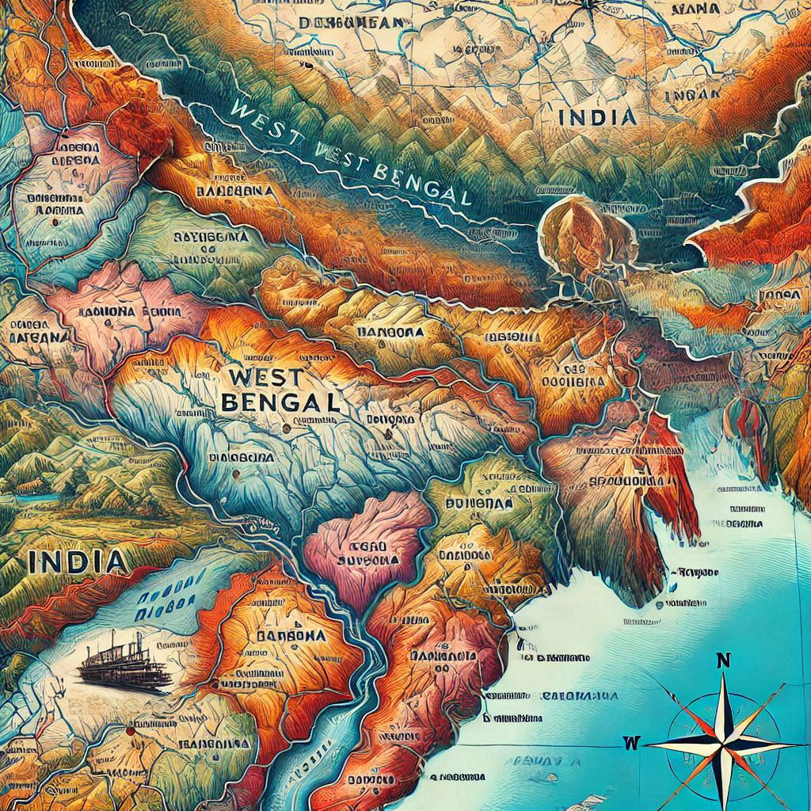
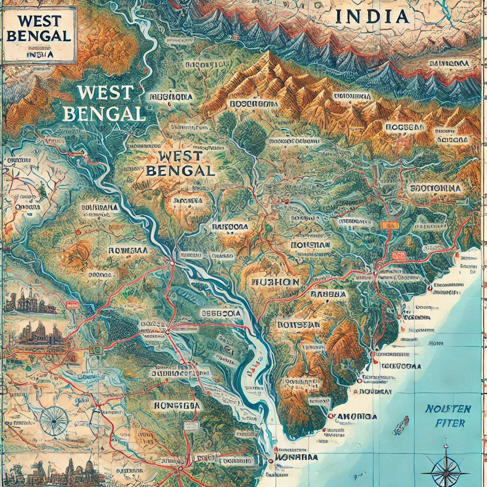

West Bengal, located in the eastern part of India, is a state known for its diverse geography, ranging from the Himalayan foothills in the north to the Bay of Bengal in the south. The geographical features of West Bengal play a significant role in shaping its culture, economy, and way of life. Here's an overview of its geographical characteristics:
1. Location and Borders
- Latitude and Longitude: West Bengal is located between 21°25′N to 27°10′N latitude and 85°50′E to 89°30′E longitude.
- Borders:
- To the north, it borders Sikkim, Nepal, and Bhutan.
- To the east, it shares borders with Bangladesh.
- To the south, it has the Bay of Bengal.
- To the west, it borders Bihar, Jharkhand, and Odisha.
2. Topography
- Himalayan Region (Northern Bengal): This region includes the Darjeeling Hills, Kalimpong, Jalpaiguri, and parts of Alipurduar and Cooch Behar districts.
- Terai Region (Foot of the Himalayas): This region lies at the foothills of the Himalayas and is characterized by marshy lands, grasslands, and dense forests.
- Gangetic Plains (Central Bengal): The majority of West Bengal lies in the Gangetic Plains, with fertile alluvial soil. This region is known for its extensive agricultural activities.
- Coastal Region (Southern Bengal): The southern part of West Bengal is marked by a long coastline along the Bay of Bengal.
3. Rivers and Water Bodies
- Ganga River: The Ganga river is crucial to West Bengal’s geography, with the Hooghly River, a major distributary of the Ganges, flowing through the state.
- Teesta and Mahananda Rivers: These rivers flow through the northern part of the state, contributing to the fertile lands.
- Damodar River: It flows through the western region and is important for both irrigation and power generation.
4. Climate
- Tropical Climate: West Bengal generally experiences a tropical climate, characterized by hot, humid summers, a monsoon season, and relatively mild winters.
- Summer: From March to June, temperatures can reach as high as 40°C (104°F) in the plains.
- Monsoon: The monsoon lasts from June to September, bringing heavy rainfall, especially along the coastal areas.
- Winter: From December to February, temperatures drop significantly, especially in the northern and hilly regions.


5. Flora and Fauna
- Forests: West Bengal is home to a variety of forests, including tropical, subtropical, and temperate forests. The Sunderban Mangrove Forest is a notable ecological region.
- Wildlife: The state is rich in biodiversity, including the Royal Bengal Tiger (in the Sundarbans), elephants, rhinoceroses, and various species of birds and reptiles.
6. Natural Resources
- Agriculture: The fertile plains support the cultivation of rice, jute, tea (particularly in Darjeeling), sugarcane, potatoes, and various fruits and vegetables.
- Minerals: West Bengal has substantial deposits of minerals, including coal, limestone, and iron ore.
- Tea Plantations: The Darjeeling region is world-renowned for its tea, which is grown in its hilly terrain.
7. Urban and Rural Landscape
- Urban Areas: Kolkata, the capital of West Bengal, is the largest city and a major cultural, commercial, and educational hub.
- Rural Areas: Much of West Bengal’s population lives in rural areas, with farming, fishing, and forestry being key economic activities.
8. Geological Features
- Earthquakes: The state lies in a seismically active zone, particularly in the northern regions near the Himalayas.
- Sundarban Delta: The Sunderban delta is continuously shifting due to the influence of tides, river flow, and sediment deposition.
In summary, West Bengal's geography is diverse, with significant variation in landscape from the hills in the north to the flat plains in the middle and the coastal region in the south. This geographical diversity has shaped the state's culture, economy, and way of life over centuries.